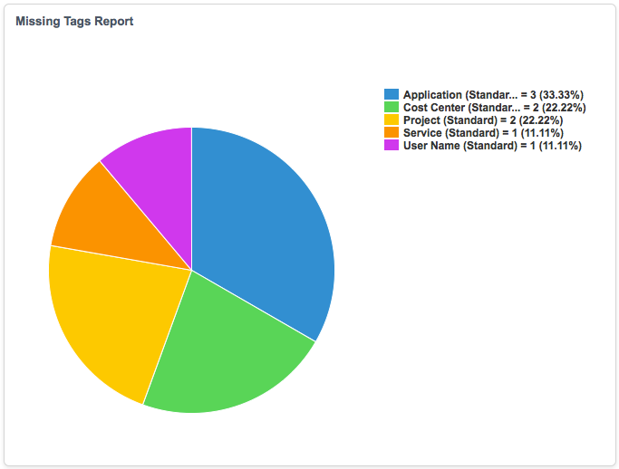

AWS Tagging
Contents
1 Overview
A tag is a label you assign to an Amazon Web Services (AWS) resource. Tags enable you to categorize your AWS resources in different ways. For example, you could define a set of tags for your account's EC2 instances that helps you track each instance's owner or cost center. Using tags, you can assign metatdata to each resource. Each tag consists of a key and a value. The following default tags are available:
- Application
- Cost Center
- Project
- Service
- User Name
The value of the tags can be any one of the following:
- Constant value
- Reference to a field of an sc_req_item
- Service catalog variable
- Script
You can create tag rules to automatically tag EC2 instances and CloudFormation stacks during provisioning.
AWS tagging is a feature of Amazon Web Services.
1.1 Create Tags
- Navigate to Amazon Web Services > Configuration > Tags.
- Click New.
- Enter a name for the tag.
- Select the category type.
- Note: Missing tag reports and bulk tagging can only be done with standard tags.
- Select the table used for bulk tagging Amazon resources.
- Select Mandatory to make tagging mandatory for the selected table.
- Enter a description for the tag.
- Click Submit.
1.2 Create Automatic Tagging Rules
Tag rules establish a set of parameters that will tag instances with the configured tag and value pair when there is a rule match during provisioning.
- Navigate to Amazon Web Services > Configuration > Tag Rules.
- Click New.
- Enter a name for the tag rule.
- Select Active to turn on the rule.
- Select a tag to use.
- Select the Value type to run the rule against.
- Value types can be either a constant type, a variable, a script, or a reference value from a table.
- Constant Value: The tag value is the sys_id of a record in the selected table. If no table is selected, the field value is used.
- Variable: The tag value is a variable from the service catalog. This variable cannot be used for another tag rule.
- Reference Value: The tag value is a reference to the requested item field of the provisioned resource.
- Script: The tag value is the variable answer (var answer) from the script.
- Value types can be either a constant type, a variable, a script, or a reference value from a table.
- Click Submit.
1.2.1 Tag Restrictions
The following restrictions apply to any tag definitions:
- Maximum key length: 127 Unicode characters
- Maximum value length: 255 Unicode characters
- Maximum number of tags per resource: 10
- Reserved prefix—aws:
- AWS-assigned tag names and values are assigned the aws: prefix, which the user cannot assign. AWS-assigned tag names do not count towards the tag limit of 10. User-assigned tag names have the prefix user: in the Cost Allocation Report.
- Use each key only once for each resource. If you attempt to use the same key twice on the same resource, your request will be rejected
- You cannot tag a resource at the same time you create it. Tagging requires a separate action after the resource is created
- You cannot backdate the application of a tag.
- Allowed characters are letters, whitespace, and numbers representable in UTF-8, plus the following special characters: + - = . _ : /
- If you need to use characters outside this set, you can standard base-64 encode your tag.
See [document http://docs.aws.amazon.com/AWSEC2/latest/UserGuide/Using_Tags.html#tag-restrictions this Amazon Web Services document] for information on tag restrictions.
1.3 Discovering Untagged AWS Resources
ServiceNow allows you to discover AWS resources that are not tagged. In order to view the list of untagged resources, you must first complete all of the steps to create an Amazon Web Services account, then click Discover Now on an existing discovery schedule.
Tags that are applied using the Amazon Web console are also updated. If a resource has been automatically tagged by ServiceNow and the tag is missing on the resource, it will display as missing a tag.
1.4 Viewing Missing Tag Reports
To view a graph showing the missing tags, navigate to Amazon Web Services > Tags > Missing Tag Report.

{kind=link}
1.5 Bulk Tagging
Bulk tagging enables you to update the standard tag values for previously provisioned Amazon EC2 instances.
- Navigate to Amazon Web Services > Instances > Virtual Machine Instances and select an instance.
- Click Assign Standard Amazon Tags.
- A window is displayed with a table of tag names populated from existing standard AWS Tags.
- Select the tags you wish to assign values to and enter, or select a value from the pre-populated list.
- The bulk tagging feature enforces the same validation rules that are used for creating tags.
- Click Assign Tags.
The AWS Resource Tags table is also populated with the tag name and values assigned in the bulk tagging feature.
{kind=link}
1.6 Automatic Tagging Extension Points
For Amazon CloudFormation, three extension points are used in the vm_extention_point table:
- CloudFormationVariableExt: This script is called when catalog item is created. The script inserts the variable set sys_id to sc_req_item sys_id into the mapping table so that the variables inside the variable set can be added to the catalog item.
- CloudFormationBeforeSchedule: This script is called before the scheduled job is created. The script extracts the tag names and values from the requested item variables and puts them into scratchpad workflow variable. The script calls the awsTagUtil script include to apply tags described in tag rules. Remember to set the order to be 200 as there is another script defined for this extension point that has to be run first.
- CloudFormationBuildCreateStackRequest: See Mandatory tags checking for EC2 and CloudFormation.
1.7 Mandatory Tag Checking for EC2 and Amazon CloudFormation
Before an EC2 vm instance is provisioned to a user, mandatory tag checking is performed in the Amazon EC2 VM Provision workflow. If all the mandatory tags defined in the tag table have valid values, the provisioning will start. Otherwise, a CI task will be created and the task will display error message saying "Mandatory tags have no value".
The extension point EC2CreateInstanceCheck contains the logic to perform the checking.
For Amazon CloudFormation stack provisioning, mandatory tag value checking is performed in the CloudFormation stack provision workflow before a stack is provisioned. If all the mandatory tags defined in the tag table have valid values, a provision will start. Otherwise, a CI task will be created and the task will display error message saying "Mandatory tags have no value". The extension point CloudFormationBuildCreateStackRequest contains the logic to perform the checking.